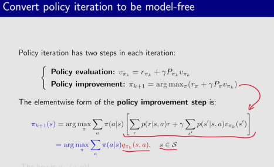
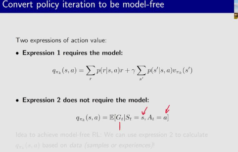
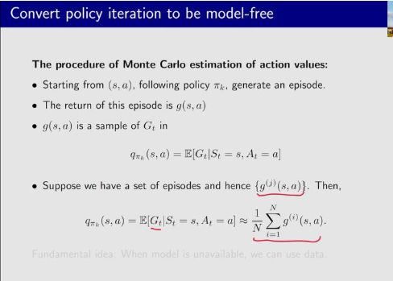
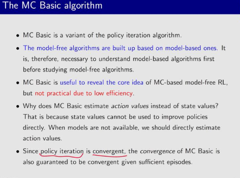
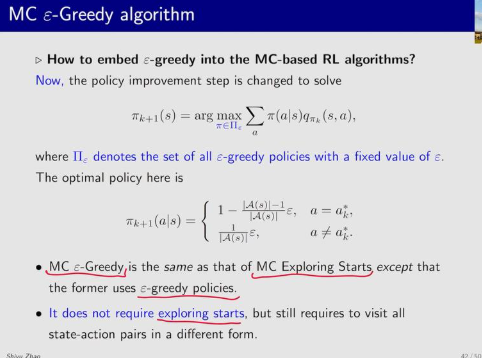
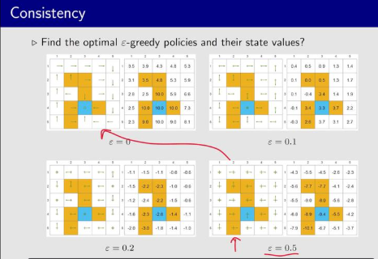

强化学习学习笔记（五）蒙特卡洛算法
强化学习学习笔记（五）蒙特卡洛算法
第四章描述的值迭代算法和策略迭代算法都是model-based的算法。
从这一章开始，我们引入蒙特卡洛学习，这是一种不需要模型的算法。也正是对应了强化学习的话：没有模型就得有数据，没有数据就得有模型。
蒙特卡洛方法来源于数学中的统计方法，比如说抛硬币问题，算抛硬币中正面的概率，用model based的方法就是直接算期望，直接知道p正＝0.5，p反＝0.5。
model free的方法就是估计很多次，重复丢这个硬币很多次，然后从结果中算概率

蒙特卡洛定理不仅可以用到强化中，其他需要大量采数据估计期望的方法都可以使用
强化学习能够用mc方法的原因：v值和q值本质都是期望，既然是期望，对应着就是求平均的策略。
mc算法是用在策略迭代算法中的，策略迭代只要是以下两步：
第一步更新v值：v＝r + γPπv
第二步更新π值：argmaxπ（rπ + γPπvπ）
但是策略迭代的过程中需要知道两个东西，一个是p(r|s,a)，另一个是p(s'|s,a)，这两个是world model中的内容。
如果我们想要进行策略迭代，又不知道model，那我们还有另一种方式，就是去估计这个q值。

其中，核心是q（s，a）
要得到动作的价值q，有两种方式，一种是用q值的定义，在有模型的情况下，给出p（r）和p（s）

在没有model的情况下，我们可以根据强化学习对于q值的定义去估计q值：在当前的s,a下用采样的方式，估计平均期望回报和G。
这就是对应的model-free RL的过程。
蒙特卡洛估计动作价值的方法如下：
第一步，从(s,a)开始，根据策略πk，生成一个回合
第二步，这个回合的回报是g(s,a)，他是Gt的一个采样。
假如我们有一个g的集合，里面有很多条轨迹，那么 qπk(s, a) = E[Gt|St = s, At = a] ≈ $$\frac{1}{N} \sum_{i=1}^{N}g^{(i)}(s,a)$$

每次采样一条完整的轨迹g，这个轨迹是G的一个子集，采集到足够多的g之后取均值，就估计了整体的回报的期望。
蒙特卡洛算法和policy evaluation的算法是非常相似的。
这是它的伪代码：在每个状态下，采样每个动作，并且采样后续的(s,a)对；然后基于这些轨迹，去估计所有回合下，从当前状态开始的平均回报，这个平均回报就作为q值。

策略改进的部分和policy iteration是一样的。greedy的方式选取当前q最大的a。
注意点
mc Basic算法是把基于model
的模块拿掉，是一种model free的算法，只是实际上，这种方法实际上不会采用，因为它的效率非常低。
mc算法直接估计动作的价值，而非状态的价值，这是因为动作价值能够直接用于改进策略，状态价值还得转成动作价值才能改进策略
由于策略迭代是保证收敛的，mc算法也是保证收敛的，之后给够充分的回合进行采样

epislon-greedy算法

mc exploring star算法需要探索的状态动作对太多，为了提高其他动作的概率，可以采用epislon-greedy方法进行探索，这种方法的策略是：大概率贪心的策略选动作，小概率随机探索

epislon greedy算法，就是在选动作的时候，把选动作的逻辑从选qmax变成随机探索。

greedy策略，epislon不能开太大，比如epislon＝0.1的时候，还能和最优策略保持一致（一致：最优策略和随机最优策略对应的最大概率动作保持一致），取0.2
0.5的时候，epislon就和原先最优策略不能用了。这个故事告诉我们，如果要是想用epislon greedy策略，epislon不能开太大。

为什么MC算法在强化学习训练中难以应用？
MC 方法是一种基于完整回合（episode）的学习方式。也就是说，它必须等到一个 episode 完全结束后，才能计算该 episode 的回报（return），并用这个回报来更新价值函数或策略。
❗问题：如果任务具有很长的 episode（比如围棋、某些控制任务），或者环境是连续型的（没有明确的终止状态），那么 MC 方法就无法有效更新，学习效率极低。
MC 方法要求任务必须是分幕式（episodic）的，即每个 episode 有明确的开始和结束。
❌ 对于持续性任务（continuing tasks），如机器人持续导航、股票交易等没有明确终止点的任务，MC 方法无法直接应用，因为回报无法定义。
✅ TD 方法可以通过引入折扣因子 γ < 1 来处理持续性任务。
MC 方法使用实际的回报 Gt
作为目标，而回报是多个随机动作和状态转移的累积结果，因此：
📈 方差很大：每次采样得到的回报可能差异很大，导致学习不稳定。
🐢 需要大量样本：为了获得可靠的估计，MC 通常需要更多的训练数据，样本效率低。
蒙特卡洛方法并不是“无法使用”，而是由于其固有的局限性（如必须等待 episode 结束、高方差、不适用于持续性任务等），在许多实际强化学习任务中不如 TD 方法高效和实用。